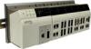
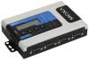
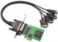
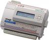
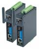

|
MOXA. Коммуникационное оборудование

- Промышленный Ethernet
- Неуправляемые коммутаторы Industrial Ethernet
- Управляемые коммутаторы Industrial Ethernet
- Промышленные маршрутизаторы
- Модульные коммутаторы Industrial Ethernet для стойки 19''
- Коммутаторы с функцией Power Over Ethernet (PoE)
- Модульные коммутаторы Industrial Ethernet на DIN-рейку
- Коммутаторы с защитой от вибрации, от попадания пыли и влаги
- Промышленные Ethernet-конвертеры
- Оборудование беспроводного Ethernet
- Конвертеры RS-232/422/485 в Ethernet
- Преобразователи NPort в стандартном исполнении (серия NPort 5000)
- Преобразователи NPort с расширенным набором функций (серия NPort 6000)
- Преобразователи NPort в промышленном исполнении (серия NPort IA)
- Преобразователи NPort со встроенным Ethernet-коммутатором (Серия Nport S8000)
- Преобразователи в беспроводной Ethernet (серия NPort W)
- Консольные серверы RS-232/422/485 в Ethernet (серия CN)
- Встраиваемые бескорпусные преобразователи (серия NPort NE)
- Преобразователи протоколов Modbus
- Платы портов RS-232/422/485 и CAN
- Мультипортовые платы для шины PCI Express
- Мультипортовые платы для шины Universal PCI (с поддержкой PCI и PCI-X)
- Мультипортовые платы для шины PCI
- Мультипортовые платы для шины ISA
- Мультипортовые платы для шины PC/104 и PC/104 Plus
- Интеллектуальные мультипортовые платы
- Мультипортовые платы с оптоволоконным интерфейсом
- Платы интерфейса CAN
- Аксессуары для 8-портовых плат (кабели и разветвители)
- Преобразователи RS-232/422/485 в USB
- 1-портовые преобразователи RS-232/422/485 в USB
- Многопортовые преобразователи RS-232/422/485 в USB в пластиковом корпусе
- Многопортовые преобразователи RS-232/422/485 в USB в металлическом корпусе
- Конвертеры и повторители интерфейсов
- Преобразователи RS-232 в RS-422/485
- Повторители и изоляторы RS-232, RS-422/485
- Преобразователи RS-232/422/485 в оптоволокно
- Модульные преобразователи интерфейсов
- Системы удаленного ввода/вывода
- Интеллектуальные Ethernet-модули удаленного ввода/вывода
- Модули удаленного ввода/вывода по RS-485
- Модули прозрачной передачи сигналов по Ethernet
- Модульные системы сбора данных
- GPRS-модули ввода/вывода
- Ethernet-модули удаленного ввода/вывода
- Дополнительные аксессуары
- Встраиваемые коммуникационные компьютеры
- Компьютеры на базе RISC-процессора
- Компьютеры с архитектурой процессора x86
- Беспроводные коммуникационные компьютеры
- GSM/GPRS-модемы
- Сотовые GSM/GPRS-модемы
- Сотовые IP-модемы с интерфейсом RS-232/422/485 и Ethernet
- Сотовые IP-модемы с интерфейсом RS-232/422/485
- Сотовые GSM/GPRS-роутеры
|
Промышленный Ethernet 
Современные требования к высокой пропускной способности коммуникационных каналов, к использованию открытых стандартов и к возможности межсетевой интеграции сделали технологию Ethernet основой для построения телекоммуникационной инфраструктуры не только в условиях офиса, но и в жестких условиях на промышленных предприятиях. Активное коммуникационное оборудование стандарта Industrial Ethernet разработано для применения в жестких условиях эксплуатации, предъявляющих особые требования к функциональным характеристикам и надежности техники.
Конвертеры RS-232/422/485 в Ethernet 
Преобразователи последовательных интерфейсов RS-232/422/485 в Ethernet - это линейка устройств, помогающих организовать работу последовательных устройств по сети стандарта Ethernet TCP/IP.
Платы портов RS-232/422/485 и CAN 
Мультипортовые платы асинхронных последовательных интерфейсов RS-232, RS-422 и RS-485 производства компании MOXA известны во всем мире и пользуются большой популярностью благодаря широкому модельному ряду, поддержкой различных шин (ISA, PCI, PCI-X, PCI Express, PC/104, PC/104 Plus), высокой надежности и программной совместимости с множеством операционных систем (Windows, Linux, FreeBSD, QNX, UNIX и прочие).
Преобразователи RS-232/422/485 в USB
Преобразователи USB в RS-232/422/485 обеспечивают подключение одного или нескольких устройств с последовательными интерфейсами, таких как терминалы, контроллеры, модемы, датчики, станки с ЧПУ и т.д. к USB-порту компьютера. Особую популярность конвертеры получили в мобильных и портативных системах, поскольку многие современные переносные компьютеры не оснащены штатными последовательными портами
Конвертеры и повторители интерфейсов
Преобразователи последовательных интерфейсов используются для подключения систем сбора данных, контроллеров, регистраторов и других устройств с интерфейсом RS-232/422/485 к последовательному порту компьютера, для обеспечения гальванической развязки интерфейсов, для передачи данных по оптоволокну на большие расстояния и в условиях электромагнитных помех.
Системы удаленного ввода/вывода 
Интеллектуальные системы аналогового и дискретного ввода/вывода используются для построения комплексов сбора данных и управления. Системы ioLogik обеспечивают подключение разнообразных датчиков, электрических, электронных и электромеханических устройств к вычислительным системам по сетям Ethernet, RS-232, RS-485, GPRS.
Встраиваемые коммуникационные компьютеры
Встраиваемые промышленные компьютеры на базе ОС Linux и Windows Embedded.
GSM/GPRS-модемы 
Беспроводное коммуникационное оборудование, разработанное компанией MOXA, полностью отвечает требованиям, предъявляемым к коммуникационным средствам современных IT-систем. Поддержка открытых стандартов, высокая скорость передачи данных и реализация эффективных механизмов защиты делают оборудование MOXA оптимальным выбором как для решения локальных задач автоматизации, так и для создания беспроводных структур IT-системы предприятия.
|
|
Технология Peer-to-Peer: новые возможности Ethernet-модулей ввода/вывода MOXA ioLogik
Новые возможности модулей удаленного Ethernet-ввода/вывода (Remote I/O) серии ioLogik E1200.
Новое программное обеспечение модулей, выпущенное в мае 2011 года, поддерживает функцию Peer-to-Peer – прозрачную трансляцию данных с входов одного модуля на выходы другого модуля. Также все модели устройств E1200 теперь доступны в модификации для работы в экстремальных температурных условиях – от -40 до +75 градусов.
Технология передачи данных Peer-to-Peer позволяет произвести удлинение линий аналогового и дискретного ввода/вывода по сетям Ethernet TCP/IP. Настройка Peer-to-Peer предельно проста: модулям ввода сигналов необходимо указать IP-адрес удаленного выходного модуля, а выходному модулю – IP-адрес источника данных.
При этом есть возможность дублировать данные с одного входа сразу на два выходных модуля. Настройка ioLogik E1200 производится через Web-консоль.
Для предотвращения потери контроля над процессом в выходных каналах модуля ioLogik E1200 реализован режим «безопасного состояния».
Подробнее ознакомиться с новой технологией Peer-to-Peer Вы можете на специальном подсайте http://p2p.moxa.ru.
Если Вы приобретали модули ioLogik E1200 ранее, то активировать новые функции можно обновив микропрограммное обеспечение (Firmware) самостоятельно или обратившись в сервисный центр MOXA.
Оборудование доступно для заказа .
|